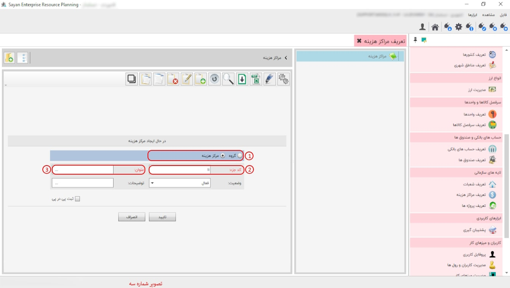

در این بخش، شما میتوانید با ایجاد مراکز هزینه برای بخشهای مختلف، هزینه هر بخش را به بخش مربوطه ارجاع دهید. پیشنهاد میشود ابتدا مراکز هزینه خود را گروهبندی کرده، سپس در هر گروه، مرکز هزینه مربوط به آن را تعریف نمایید.

برای ادامه مطلب به تصویر شماره دو مراجعه نمایید.

-کادر شماره دو: این بخش، این امکان را به شما میدهد که مراکز هزینه مدنظر خود را تعریف، ویرایش و همینطور مشاهده نمایید.
برای ادامه مطلب به تصویر شماره سه مراجعه نمایید.
-کادر شماره یک: در این قسمت میبایست ابتدا روی مرکز هزینه کلیک نمایید.
-کد جزء (کادر شماره دو): در این بخش، کد بهصورت پیشفرض برای شما ایجاد میشود. به همین دلیل، نیازی به تغییر در کد جزء نیست.
-عنوان (کادر شماره سه): در این بخش، عنوان مرکز هزینه مدنظر خود را وارد نمایید.